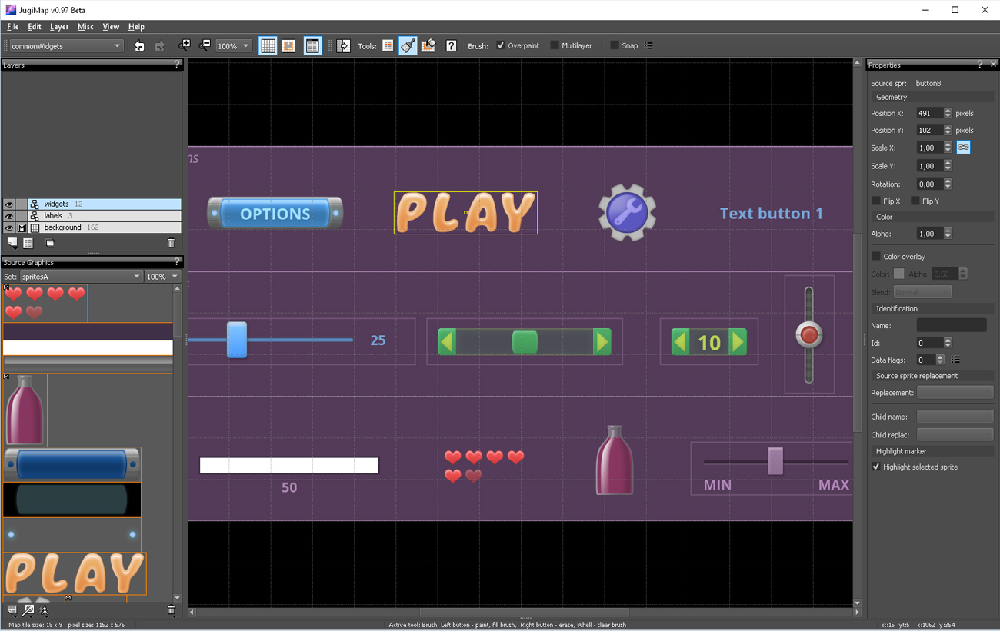

Gui Demo is an application which displays GUI features of JugiMap framework.
The application source code: github.com/Jugilus/JugiMapAPI/tree/master/examples_c%2B%2B/GuiDemo
The project files for JugiMap Editor: GuiDemoEditor.zip
A screenshot with an used map in JugiMap Editor: 
JugiMap GUI module provides widgets, text objects and supporting GUI features. GUI maps are designed in JugiMap editor in the same way as other maps. The widgets are created in JugiMap framework from custom parameters assigned to sprites in the editor.
Main features:
JugiMap web resources